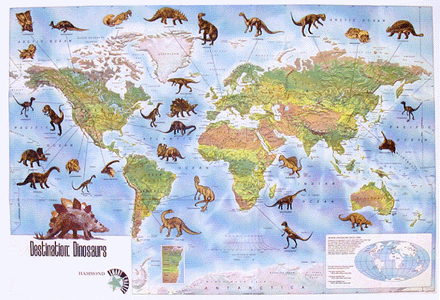
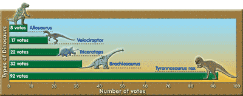

- Tell
- Plan
- Build
- About
- For Teachers
How do I make informative graphics?
Information graphics take you where photos cannot. They explain how something happens or diagram the parts of an object. Information graphics should simplify complex information, map a location or turn numbers into charts and visualizations. Information graphics are very powerful, indeed!

Diagrams are great for explaining how something happens. Start with a photo or illustration. Then, add text-based explainers that describe parts of the illustration. Hang as much textual information as you can from the illustration to make a really active diagram.
Maps help show where something happened. Add text-based explainers or statistical information that allow the map to tell a story.
Charts can visualize numerical information in a way that makes it easier to understand. Pie charts break down parts of a whole. Bar charts compare whole amounts. And fever charts show change over time.